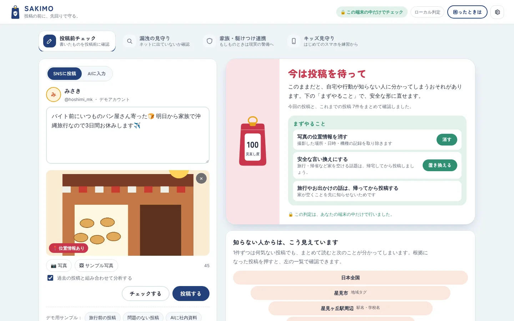
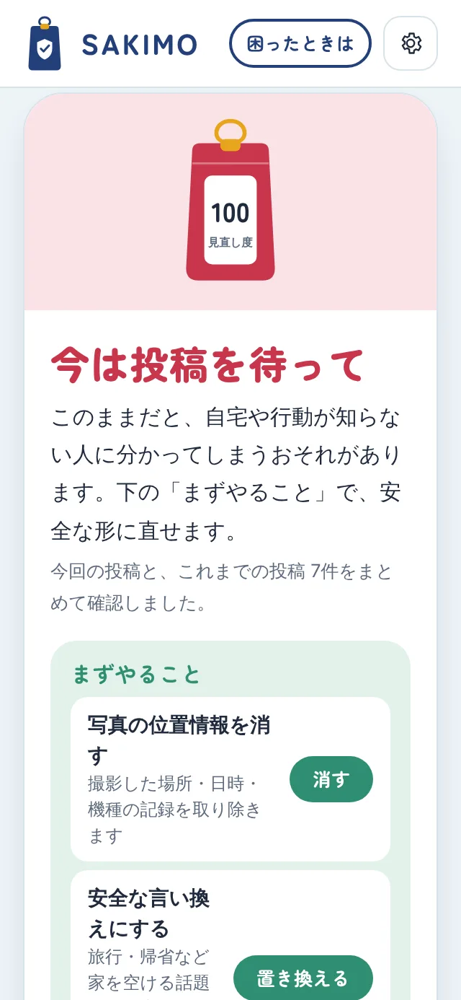
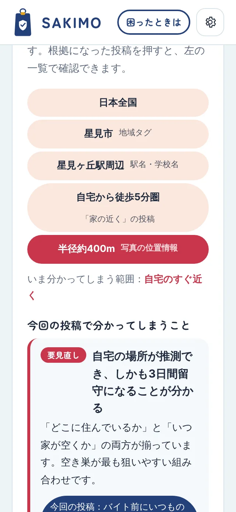
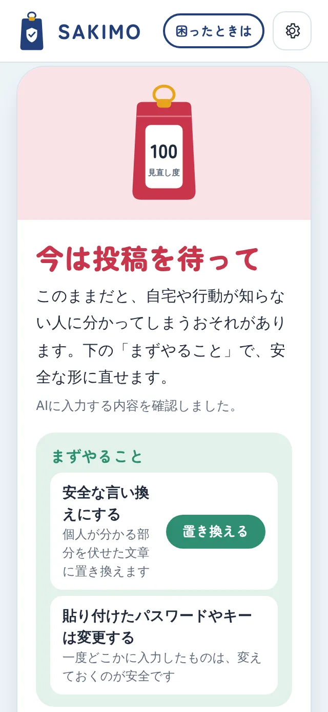
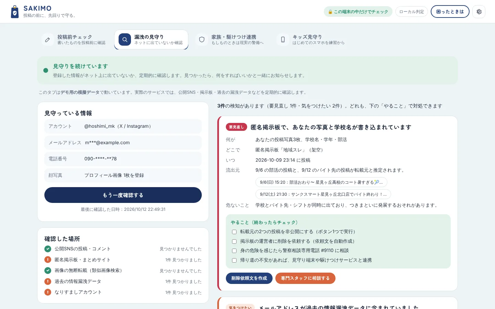
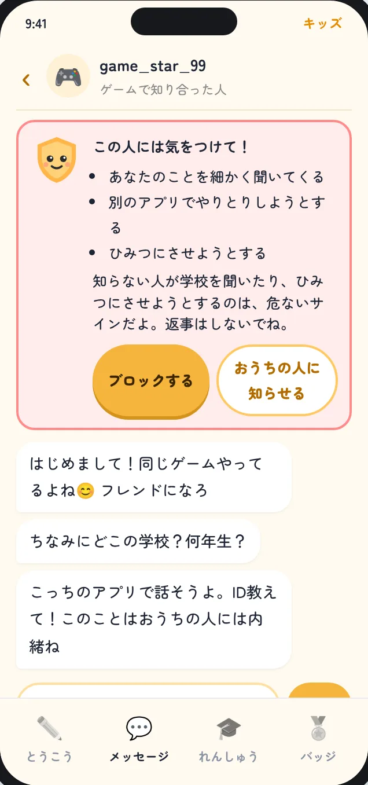
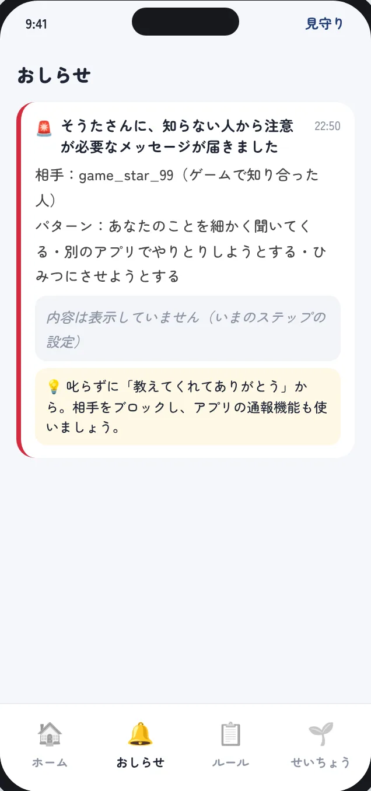

kindchord のプロダクト
SAKIMOさきも ― SNS見守りサービス
投稿する前に、ひと呼吸。身バレを、先回りして防ぐ。
SNSに投稿する前の文章と写真から、家・学校・いつもの行動が分かってしまう手がかりを見つけて、安全な言い換えまで用意します。もし情報が漏れても、何をすればいいかまで案内します。


課題
1件ずつは何気なくても、まとめると家が分かる。
SNSで身元が分かってしまうのは、住所を書いたときだけではありません。何気ない投稿が積み重なると、それだけで住んでいる場所や行動が分かってしまいます。
たとえば、駅の名前、「家から徒歩5分のパン屋」、そのパン屋で撮った写真の位置情報、「明日から3日間旅行」。どれも普通の投稿ですが、並べると自宅の場所と、家が空く日が分かります。
本人は1件ずつしか見ていないので、この組み合わせに気づけません。
-
74.2%
SNSがきっかけで被害にあった子どもが、相手と知り合う最初の投稿をしたのは、子ども本人だった割合。
-
約7割
プロフィールを公開している青少年のうち、悪用のリスクを「考えたことがない」「感じない」と答えた割合。
-
62%
スマホを持っている小学6年生の割合。SNSデビューは、年々早くなっています。
出典：総務省 令和7年度 青少年のインターネット利用に関する調査（概要）、モバイル社会研究所 小中学生のスマホ調査（2024年11月）
解決案
投稿する前に気づかせて、漏れた後まで守る。
SAKIMOは、投稿を止めるアプリではなく、投稿する前に気づかせるアプリです。禁止されると人は使うのをやめてしまうので、理由と直し方をセットで見せます。
書いた文章と写真を、これまでの投稿と合わせて確認し、「知らない人からはこう見えています」と示します。危ないところが見つかったら、位置情報を消した写真と、個人が分かる部分を伏せた文章をワンタップで用意します。
生成AIに社内資料やパスワードを貼り付けてしまう、新しい漏れ方にも対応します。
-
投稿前チェック
学校名・駅名・留守の予告・写真の位置情報など、25種類の手がかりを見つける。
-
組み合わせの分析
過去の投稿と合わせて、自宅や通学ルートがどこまで絞られるかを示す。
-
安全な言い換え
伏せた文章と、位置情報を消した写真をワンタップで用意する。
-
AIへの入力も
パスワード・APIキー・社外秘の資料を、送る前に見つける。


仕組み
判定は、あなたの端末の中だけで。
投稿前のチェックは、すべてスマホやパソコンの中で行います。投稿する前の文章を外に送ってしまっては、守るためのサービスが漏れる入口になってしまうからです。
判定には、決まったルールで手がかりを見つけ、それらをつなぎ合わせる仕組みを使っています。入力するそばから結果が出て、何度使ってもお金がかかりません。どの警告にも理由があるので、なぜ危ないのかを説明できます。
写真に写った制服や景色など、ルールでは分からないものだけ、本人が選んだときにAIで詳しく見ます。
-
端末の中で判定
書いた内容はどこにも送られない。ネットがなくても動く。
-
理由が分かる
警告ごとに「なぜ危ないか」と「どうすればいいか」を表示する。
-
必要なときだけAI
写真の写り込みや文脈は、本人の同意があるときだけAIで確認する。
漏洩の見守り
漏れた後も、ひとりにしない。
気をつけていても、情報が漏れてしまうことはあります。そのとき困るのは、何をすればいいのか分からないまま、時間がたって広がってしまうことです。
SAKIMOは、登録した情報がネット上に出ていないかを見守り、見つけたら「何が・どこで・どこから・どれくらい危ないか・何をすればいいか」をまとめて知らせます。削除をお願いする文章も、その場で作れます。
つきまといなど現実の危険につながりそうなときは、人の手と、現実の警備につなぎます。

-
アプリで知らせる
漏れた内容と対処のしかたを、すぐに案内する。ほとんどはここで解決する。
-
専門スタッフが対応
削除依頼の代行や、なりすましへの対応、相談窓口へのつなぎを行う。
-
現実の警備につなぐ
自宅が知られた兆しがあれば、見守り端末や駆けつけと連携する。
キッズ見守り
はじめてのスマホを、禁止ではなく練習に。
スマホを持たせるとき、保護者の選択肢は「全部禁止」か「任せきり」になりがちです。でも本当に必要なのは、子どもが自分で気づけるようになるまでの練習期間です。
キッズ見守りでは、子どもが投稿しようとすると、キャラクターのマモルがやさしい言葉で危ないところを教えます。知らない人から学校を聞かれたり、ひみつにさせようとされたりしたら、ブロックとおうちの人への相談をすすめます。
保護者に届くのは、中身ではなくお知らせと、話しかけるきっかけです。学年に合わせて見守りを少しずつゆるめ、高校生で「そつぎょう」します。


-
ステップ1 はじめて
小1〜小4のめやす。気になる投稿は、おうちの人のOKが出てから。
-
ステップ2 じぶんで考える
小5〜中1のめやす。本人が判断し、見直しが必要なときだけ知らせる。
-
ステップ3 そつぎょう準備
中2〜中3のめやす。保護者に届くのは、週の件数と緊急のときだけ。
-
そつぎょう
高校生から。自分のための投稿前チェックとして使い続けられる。
Promise
見張るのではなく、
見守る。
SAKIMOは、使う人が安心できることを、機能より先に決めています。
守るためのサービスが、新しい不安の種になってはいけないからです。次の4つは、どの機能をつくるときにも変えません。
-
01
端末の中で判定する
投稿する前の文章を、サーバーに送ったり保存したりしない。
-
02
中身はのぞかない
保護者に届くのは、件数と緊急のお知らせだけ。本人の同意が前提。
-
03
止めずに、気づかせる
投稿をブロックせず、理由と安全な言い換えを提案する。
-
04
漏れた後まで寄りそう
知らせて終わりにせず、対処と相談先まで案内する。
Help
困ったときは、
ひとりで抱えこまないで。
-
警察（緊急）
つきまとわれている、家の前に知らない人がいる など、今すぐ身の危険を感じるとき。
110
-
警察相談専用電話
ストーカー・脅し・なりすましなど、急ぎではないけれど相談したいとき。
#9110
-
違法・有害情報相談センター
ネットの書き込みを消したいとき。総務省の支援事業で、Webから相談できます。
Web
-
24時間子供SOSダイヤル
いじめやネットのトラブルなど、子どもも保護者も相談できます（文部科学省）。
0120-0-78310
番号や受付時間は、各窓口の公式情報で確認してください。
これからの展望
まず、身近な人に使ってもらう。
次の一歩は、学生と保護者に実際に試してもらうことです。いまは架空のアカウントで動くデモで、本当に行動が変わるかは、使ってもらわないと分からないからです。
自分の過去の投稿で試せる機能をつくり、警告を見て投稿を直した人がどれくらいいるかを確かめます。集まった声は、判定のルールと、言葉づかいの改善に生かします。
その先は、スマホの共有メニューから使える形にし、学校の情報モラルの授業や、家族の見守りサービスと組み合わせて広げていきます。
SAKIMOは、マイナビSTART「課題解決プロジェクト」の出題テーマ「先回りの安心」をきっかけに開発しています。出題企業との提携関係はありません。デモに登場する人物・地名・店名・サイトは、すべて架空のサンプルです。